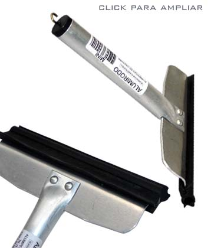

|  |
O
Alumirodo Mini, foi desenvolvido para trabalhos em locais de
pouco espaço. Possui um cabo em alumínio
muito resistente que é acoplado a uma base de 13,5cm, composta
em duralumínio(alumínio de alta resistência),
por meio de rebites. Tornando-o assim um produto extremamente resistente,
o que o destaca dos outros produtos similares existentes no mercado.
Sua aplicação e diversificado, tendo como alvo principal
puxar a água de pia e para brisas de veículos.
Assim como os outros produtos da linha Alumirodo, o Mini também
possibilita a fácil substituição da borracha.
|